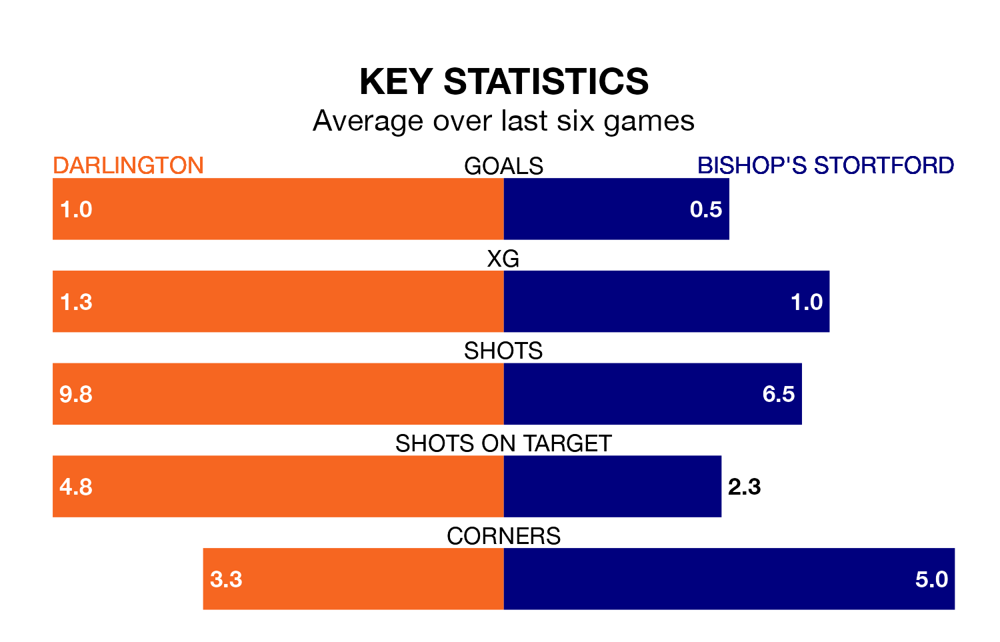

Bishop's Stortford travel to Blackwell Meadows for Saturday's match against Darlington looking to bounce back from defeat last time out in National League North and South.
Bishop's Stortford, who sit zero in the league after 22 games, fell to a 1-0 home defeat to Hereford on December 16.
They face a Darlington side who picked up a win in their last match, a 1-0 victory against Gloucester City, and who sit zero in the table.
Darlington are in mixed form in National League North and South, with two wins and two draws from their last six games.
With no wins and a draw over that period, Bishop's Stortford's form is much worse – they have taken one point from 18, compared to the home side's eight.
With 18 goals in 21 games so far this season, Darlington are the league's-23th-lowest scorers with 0.9 goals per game. And they are conceding more than average, letting in 43 goals at a rate of 2.0 per game.
The visitors are also below average scorers, with 0.9 goals per game, compared to a league average of 1.4. They have conceded 2.1 goals per game.
Updated: 12:43, 20/12/23